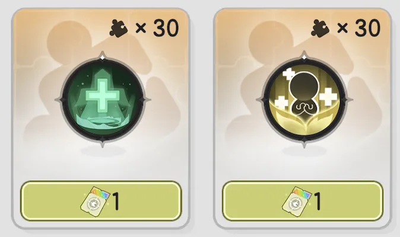

Bạn có đang không hài lòng với lớp hiện tại của mình?
Bạn có cảm thấy Thuật Sư (Sorcerer) của mình quá mong manh, vỡ tan ngay khi vừa bị chạm vào?
Bạn có cảm thấy Đấu Sĩ (Duelist) của mình chẳng nạp được bao nhiêu, không gây được sát thương, và chẳng ai muốn lập đội cùng bạn?
Bạn có cảm thấy Hiệp Sĩ (Knight) của mình cứng nhắc và chậm chạp, như một khúc gỗ biết đi?
Bạn có cảm thấy Hiền Giả (Sage) của mình chẳng đẩy được nội dung nào cả, khiến bạn sắp phát khóc?
Bạn có ghen tị với những Thuật Sư (Sorcerer) quét sạch cả màn hình chỉ bằng một combo hào nhoáng và phá hủy mọi thứ trong tầm mắt?
Bạn có ghen tị với những Đấu Sĩ (Duelist) lướt qua kẻ địch với ánh kiếm loang loáng, lật ngược những trận đấu tưởng chừng không thể thắng?
Bạn có ghen tị với những Hiệp Sĩ (Knight) đứng hiên ngang với thân thể bất khả xâm phạm, thắng trận mà không cần nhấc một ngón tay?
Bạn có ghen tị với những Hiền Giả (Sage) vừa gây sát thương vừa hồi máu, chơi như một vị thần toàn năng?
Bạn muốn chuyển lớp.
Bạn muốn trải nghiệm thứ gì đó khác biệt.
Nhưng… liệu có hệ thống chuyển lớp nào không?
Có đấy.
Có chứ, anh em — có đấy.
CHUYỂN LỚP KHÔNG MẤT MÁT (LOSSLESS CLASS TRANSFER)
Không phải $9.99
Không phải $19.99
Thậm chí không lấy của bạn một xu nào.
Miễn phí. Miễn phí. MIỄN PHÍ!
Được rồi, không nói nhảm nữa.
Đi thẳng vào vấn đề và nói về chuyển lớp không mất mát.
Bắt Đầu]
Nhiều người chơi cuối cùng cũng gặp phải cùng một vấn đề: sau khi chơi một thời gian, bạn nhận ra mình không thích lớp hiện tại và muốn đổi lớp. Trong hướng dẫn này[1], tôi sẽ giải thích hệ thống Chuyển Lớp hoạt động như thế nào, khi nào thì thích hợp để chuyển lớp, và những người chơi nào nên cân nhắc làm điều đó. Được rồi — bắt đầu nào.
Cảnh Báo Quan Trọng: ĐỪNG Chuyển Lớp Quá Sớm]
Trước khi đến Aqualis, hay Cấp 100, nếu bạn chuyển lớp ở Verdantglade hay Cinder Ridge, kỹ năng của bạn sẽ không được giữ lại. Ví dụ, nếu bạn đổi từ Chiến Binh (Warrior) sang Pháp Sư (Mage), bạn sẽ chỉ còn hai Kỹ Năng mặc định của Pháp Sư. Tất cả Kỹ Năng của Chiến Binh sẽ bị khóa, buộc bạn phải quay lại Kỹ Năng của Pháp Sư từ đầu. Vì vậy, tôi đặc biệt khuyên mọi người chơi nên đợi đến khi đến Aqualis và mở khóa Chuyển Lớp lần 3 rồi mới đổi lớp.
Khi bạn đã đến được thời điểm đó:
• Kỹ năng hiện có của bạn sẽ được chuyển đổi khi bạn chuyển lớp
• Ngay cả khi sau đó bạn quay lại Verdantglade hay Cinder Ridge để chuyển lớp lần nữa, bạn cũng sẽ không mất kỹ năng.
Các Lựa Chọn Chuyển Lớp tại Aqualis (Cấp 100)]
Khi bạn đến Aqualis và chuyển lớp ở cấp 100, bạn sẽ được đưa ra hai lựa chọn: Chuyển Lớp Không Mất Mát (Chuyển Đổi) (Lossless Class Change (Conversion)) và Hoàn Lớp Về Ban Đầu (Không Chuyển Đổi) (Class Rollback (No Conversion)). Hãy bắt đầu với Chuyển Lớp Không Mất Mát.
Chuyển Lớp Không Mất Mát (Chuyển Đổi)]
Với Chuyển Lớp Không Mất Mát, bạn có thể tự do đổi sang bất kỳ lớp nào trừ lớp hiện tại của mình.
Mỗi lần Chuyển Lớp tiêu tốn một Slate
Bạn nhận được một Slate miễn phí mỗi tuần
Slate chưa dùng sẽ không cộng dồn
Nói đơn giản: bạn được một lần Chuyển Lớp miễn phí mỗi tuần
Nếu bạn chuyển lớp nhiều lần trong cùng một tuần, những lần chuyển thêm sẽ tốn Dawnium. Thỉnh thoảng, nhiệm vụ cốt truyện chính có thể thưởng Slate, nhưng những lần đó cực kỳ hiếm. Khi bạn chuyển lớp, vũ khí hiện tại của bạn sẽ bị khóa, và hệ thống sẽ tặng bạn một vũ khí mới phẩm chất xanh (blue) của lớp hiện tại. Vũ khí cũ sẽ không biến mất, nó sẽ nằm trong túi đồ của bạn.
Cách Chuyển Đổi Kỹ Năng Hoạt Động]
Khi chuyển lớp, hệ thống sẽ chuyển đổi Kỹ Năng dựa trên độ hiếm cơ bản và bậc lớp.
Quy tắc quan trọng:
Chuyển đổi dựa trên độ hiếm cơ bản, không phải độ hiếm cuối cùng
Không chuyển đổi hoàn toàn ngẫu nhiên
Không chuyển đổi kỹ năng chéo lớp
Kỹ Thuật (Technique) chỉ chuyển thành Kỹ Thuật (Technique)
Bùa (Charm) chỉ chuyển thành Bùa (Charm)

Hai Bùa Huyền Thoại của Thánh Hiệp Sĩ (Paladin)
Ví dụ
Nếu bạn đổi từ Đấu Sĩ lần 3 (Cuồng Chiến (Berserker)) sang Hiệp Sĩ lần 3 (Thánh Hiệp Sĩ (Paladin)):
Đấu Sĩ lần 3 có bốn Kỹ Năng Huyền Thoại (Legendary)
2 Kỹ Thuật (Technique)
2 Bùa (Charm)
Hai Bùa Huyền Thoại của Cuồng Chiến (Berserker)
Hai Bùa Huyền Thoại (Legendary Charm) sẽ được chuyển đổi ngẫu nhiên thành hai Bùa Huyền Thoại của Hiệp Sĩ lần 3
Điều tương tự cũng áp dụng cho Kỹ Thuật (Technique) và các độ hiếm khác
Vì vậy, Đấu Sĩ lần 3 nhìn chung là ứng viên kém để chuyển sang Hiệp Sĩ. Một trong những Bùa Huyền Thoại (Legendary Charm) của Đấu Sĩ là kỹ năng sát thương cốt lõi, trong khi cả hai Bùa Huyền Thoại của Hiệp Sĩ đều là những kỹ năng bỏ đi.
Cơ Chế An Toàn Khi Chuyển Đổi]
Trong quá trình chuyển đổi, hệ thống sẽ cung cấp ba kết quả chuyển đổi khác nhau để bạn lựa chọn.
Điều này đảm bảo:
Bạn không bị ép phải nhận một bộ kỹ năng duy nhất
Bạn có cơ hội sửa những lần quay xấu
Những người chơi trước đây quay kém sẽ không bị phạt khi chuyển lớp
Thời Gian Hoàn Tác 8 Giờ: Sau khi chuyển lớp, bạn có 8 giờ để hoàn tác về lớp ban đầu.
Tất cả kỹ năng sẽ trở về trạng thái trước khi chuyển
Sau 8 giờ, lớp mới sẽ tự động được khóa
Hoàn tác sau thời điểm đó sẽ tốn thêm một Slate nữa
Các Trường Hợp Thường Dùng Của Chuyển Lớp Không Mất Mát]
Loại Chuyển Lớp này thường được dùng cho:
Trận Đấu Thử Thách 4v4 (4v4 Challenge Matches)
Phụ bản độ khó cao, nơi một số lớp đang thiếu
Đẩy thứ hạng Gem Tower ở Loog Haven
Đua thứ hạng theo mùa (không phải Power Rank thường), khi trang bị vũ khí chính hoặc vũ khí phụ có điểm cao hơn từ các lớp khác
Đơn giản là trải nghiệm một lớp khác
Hoàn Lớp Về Ban Đầu (Không Chuyển Đổi)]
Bây giờ hãy nói về Hoàn Lớp Về Ban Đầu (Class Rollback). Hoàn Lớp Về Ban Đầu sẽ đưa bạn trở lại lớp khởi đầu — Chiến Binh (Warrior) hoặc Pháp Sư (Mage). Mục đích chính của tính năng này là quay lại các kỹ năng bậc thấp bằng cách thu hẹp bể kỹ năng của bạn.
Ví dụ 1
Nếu bạn hiện đang ở Chuyển Lớp lần 3, nhưng kỹ năng lớp 1 của bạn là Insightful Eye mới chỉ ở mức Mythic, và bạn muốn đẩy nó lên Immortal, bạn có thể:
Hoàn lớp về lớp 1
Vô hiệu hóa tất cả kỹ năng lớp 2 và lớp 3
Chỉ quay lại các kỹ năng bậc thấp
Ví dụ 2
Nếu kỹ năng lớp 2 của bạn là Resurrection có Champion Rank thấp:
Hoàn lớp về Pháp Sư (Mage) lớp 1
Sau đó chuyển thành Hiền Giả (Sage) lớp 2
Điều này giúp tránh việc quay phải bất kỳ kỹ năng lớp 3 nào. Nhìn chung, Hoàn Lớp Về Ban Đầu hiếm khi được dùng, nhưng nó tồn tại cho những trường hợp tối ưu rất cụ thể.
Kết]
Đó là tất cả những gì bạn cần biết về Chuyển Lớp. Hẹn gặp lại sau nhé.